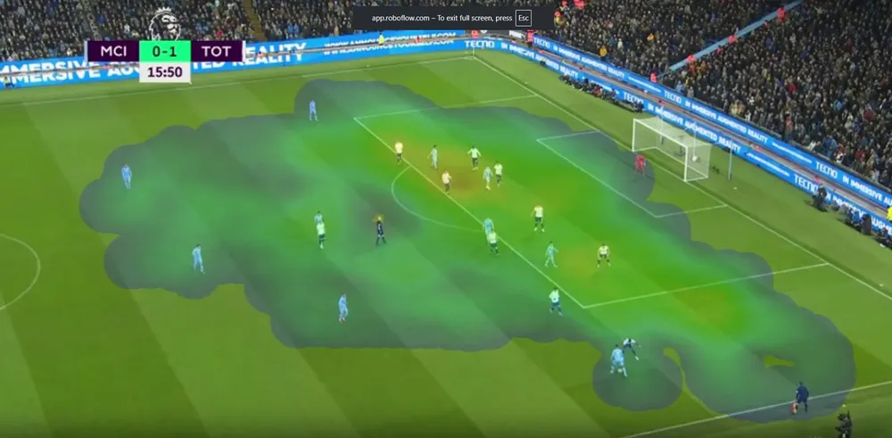

Sports Analytics AI with Roboflow
From Broadcast Frames to Tactical Formations
1. Short overview
Sports analytics AI uses computer vision to turn match footage into structured data on players, positions and tactics. This tutorial by Mostafa Ibrahim builds a pipeline in which RF-DETR detects players, goalkeepers, referees and the ball, and Gemini 2.5 Pro estimates each team’s most likely formation from a single broadcast image. The detector reached 84.4% mAP@50, and the workflow returns a JSON with formation, attacking direction, confidence and reasoning. A second workflow adds ByteTrack and a heatmap block to show where players spend their time across frames.
2. Fuller summary
Definition and pipeline
Sports analytics AI applies machine learning and computer vision to sport so that teams can extract player data, formations and performance metrics from raw video. Most systems follow the same pattern: collect visual data, detect players and objects, track or structure their positions, then generate higher-level analytics from those spatial signals.
Dataset and training
The dataset comes from Roboflow Universe and contains broadcast images with four classes: player, goalkeeper, referee and ball. It has no tactical labels, only bounding boxes. The images vary in stadium, lighting and zoom, which matters because player spacing and visibility change with the camera. The model is RF-DETR Small, trained with a 70/15/15 split, auto-orientation and resizing to 512×512. RF-DETR is Apache 2.0 licensed, so it can be used commercially.
Evaluation
The model reached 84.4% mAP@50, 91.2% precision, 84.5% recall and an F1 score of 87.1%. High recall means few missed players, and high precision means few false detections that could distort a formation estimate. These metrics measure detection only, not tactical interpretation.
Workflow: detection + VLM
Roboflow Workflows chains four blocks. RF-DETR detects the objects, a visualization block annotates the frame, a Gemini 2.5 Pro block analyses the tactical structure, and a Parse Nested JSON block turns the answer into machine-readable output. Gemini runs with an open prompt at temperature 0.3. It first finds each team’s attacking direction and goal, then picks a formation from a fixed list (4-3-3, 4-4-2, 4-2-3-1, 3-5-2, 5-3-2, 3-4-3, unknown). Because the model never learned formation labels, the VLM acts as a reasoning layer on top of the detections. The parser also copes with responses wrapped in markdown fences.
Limits
Reasoning from a single frame gives estimates, not verified classifications. Wide tactical camera angles give the best results, while cropped transition frames and set pieces increase uncertainty.
Case study: tracking and heatmaps
A second workflow runs the same detector on a short video clip. A ByteTrack block gives each player a persistent ID across frames, and a heatmap block accumulates positions over time. The result shows which areas of the pitch were used most, which helps analyse positional discipline, zone coverage and changes in team shape. Wide or top-down views are more reliable than fast-moving camera shots.

Extensions
For production, the tutorial suggests team-colour clustering, top-down pitch homography and multi-frame temporal analysis, which would allow optical tracking without expensive stadium-installed hardware.
3. Short overview (Key words)
- Sports analytics AI: video → structured data (players, tactics)
- Pipeline: collect → detect → track → analytics
- RF-DETR (detection) + Gemini 2.5 Pro (formation)
- 84.4% mAP@50, 91.2% precision, 84.5% recall
- Output: JSON (formation, direction, confidence, reason)
- ByteTrack + heatmap → movement over time
4. Fuller summary (Key words)
Definition and pipeline
- ML + computer vision on sport → telemetry, formations, metrics
- Collect → detect → track/structure → analytics
Dataset and training
- Roboflow Universe → player, goalkeeper, referee, ball
- Boxes only, no tactical labels
- RF-DETR Small → split 70/15/15 → auto-orientation, 512×512
- Apache 2.0 → commercial use
Evaluation
- mAP@50 84.4% → precision 91.2% → recall 84.5% → F1 87.1%
- Detection quality only
Workflow: detection + VLM
- RF-DETR → bounding box visualization → Gemini 2.5 Pro → Parse Nested JSON
- Temperature 0.3, open prompt
- Direction first → then formation from a fixed list
- VLM = reasoning layer (no formation labels)
Limits
- Single frame → estimate, not verified
- Best: wide angle; worst: cropped frames, set pieces
Case study: tracking and heatmaps
- RF-DETR → ByteTrack (persistent IDs) → heatmap
- Positional discipline, zone coverage, team shape
- Best: wide or top-down views
Extensions
- Team-colour clustering → homography → temporal analysis